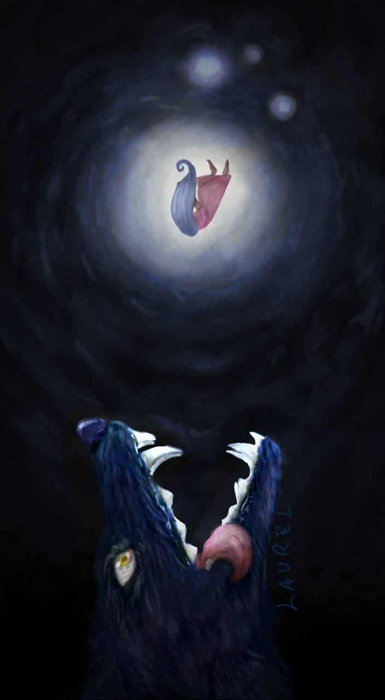
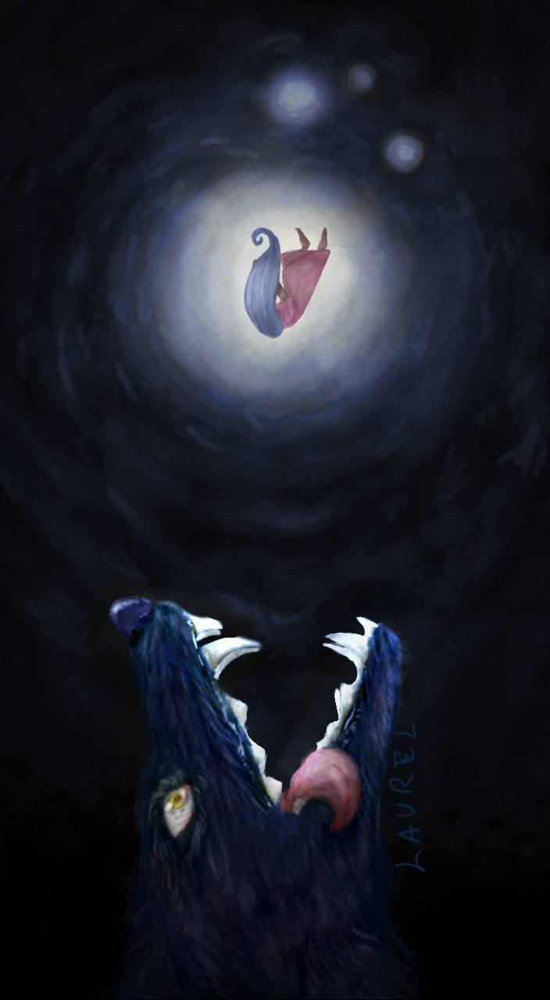

Home / In bocca al lupo
In bocca al lupo
 

Qui sù un’illustrazione più articolata delle precedenti: In bocca al lupo. Questo è nata come un gioco di parole facente riferimento all’omonimo detto utilizzato come buona fortuna in Italia. Una ragazza munita di luce propria, precipita esanime in bocca a un immenso lupo, dando così un punto di luce freddo che si rispecchia sul muso, gli occhi dell’animale e sulle pareti dell’anonimo luogo in cui sono situati. A lato è possibile osservare il modello del lupo in dettaglio senza luci, ombre e su sfondo bianco. Per ritrarre correttamente la scena mi sono munita di diverse reference per la posa della ragazza e la figura del lupo,osservando immagini di quest’animale ringhiante e a fauci spalancate. Ho iniziato il disegno su Adobe Photoshop 2023, ultimandolo mesi dopo su Procreate, dandogli uno sfondo e l’atmosfera ora osservabile nell’illustrazione finita. Ho usato la stessa tecnica di colorazione delle opere precedenti: dal bianco e nero ai colori.